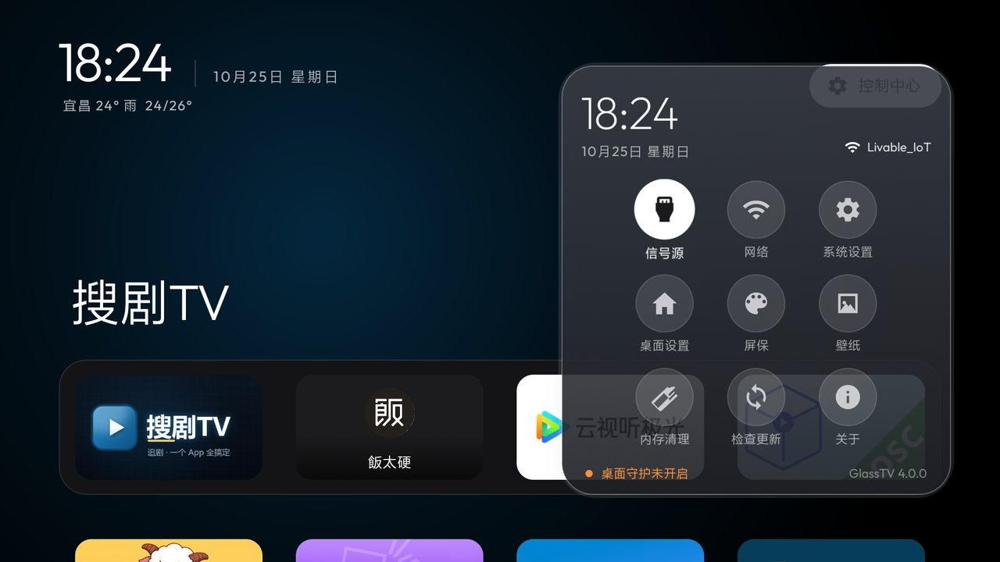
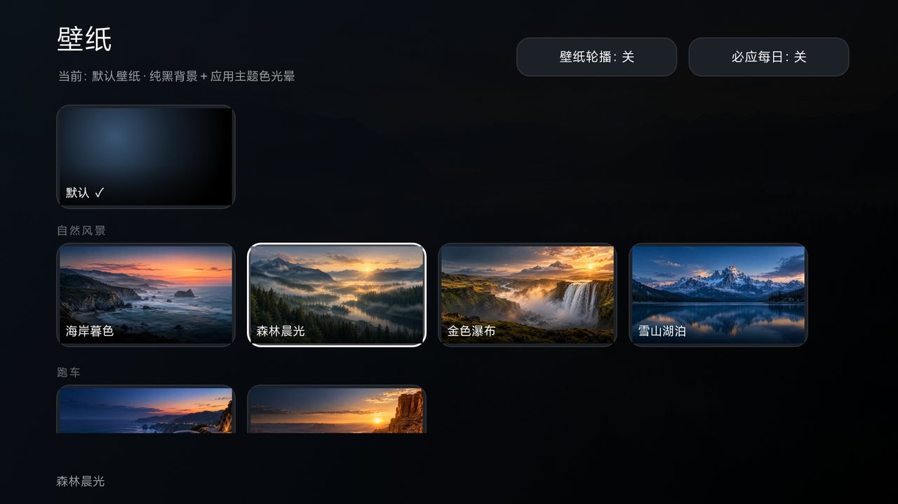
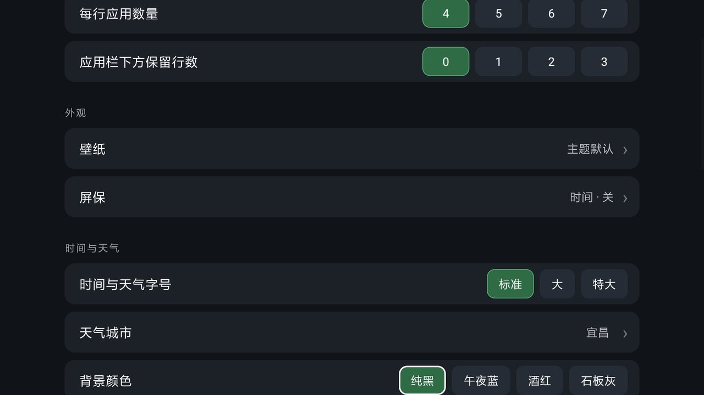
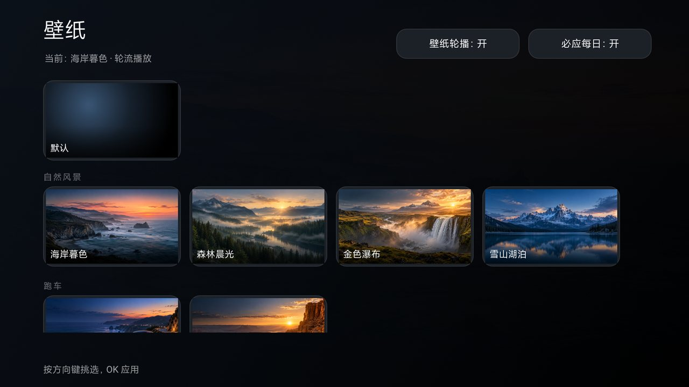

半透明玻璃质感
应用栏、控制中心、设置页统一毛玻璃；焦点靠描边提亮，不靠五颜六色的磁贴。
开源 · 免费 · 无广告
给电视一块干净的玻璃桌面。
打开就是你的应用和壁纸，没有会员推荐，没有开机广告位。

所有功能收进一个控制中心，桌面上只留你每天要看的东西。
应用栏、控制中心、设置页统一毛玻璃；焦点靠描边提亮，不靠五颜六色的磁贴。
右上角一个按钮：信号源、网络、系统设置、桌面设置、屏保、壁纸、内存清理、检查更新、关于。
自然风景、跑车、卡通、清简四组，4 列缩略图挑一张就换；也能开轮播或每日必应。
字号标准/大/特大三档，天气城市可手填也可留空自动定位，背景颜色四档可选。
按间隔清理后台，白名单保住你要常驻的应用；也能随时手动清一次。
不用 U 盘：桌面开一个局域网网页，手机扫码把 APK 直接推进电视。
以下都是小米电视上实拍的界面。




不用 root，不用刷机，不改系统分区。
Android 5.0 及以上用通用版；老盒子（4.4）用精简版。
也可以到 GitHub Releases 下载最新版。
U 盘拷进去用电视的文件管理器安装；或者用手机通过「快传」直接推过去。
按遥控器 Home 键，在弹出列表里选 GlassTV，勾选「始终」。之后开机直接进它。
com.glasstv.tvhome），
和旧版可以并存。旧版布局不会自动迁移，建议装好新版、确认没问题后再卸载旧版。
不会。原桌面只是不再当默认，随时按 Home 键切回去。
Android TV / Google TV 以及国产安卓电视都可以，小米电视已实测。Android 4.4 的老盒子用精简版。
去掉必应每日壁纸、视频壁纸、在线壁纸这些吃内存的功能，其余（壁纸、自动清理、控制中心、设置）都在。
桌面设置 → 时间与天气 → 天气城市，填中文城市名；留空则自动定位（需要给应用位置权限）。
可以。壁纸页选内置图，或把图片放进电视的配置目录（见仓库 README）。
控制中心 → 检查更新，会读 GitHub Releases 的最新版本自动下载安装。